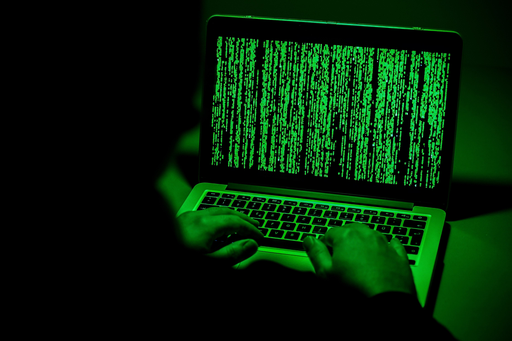
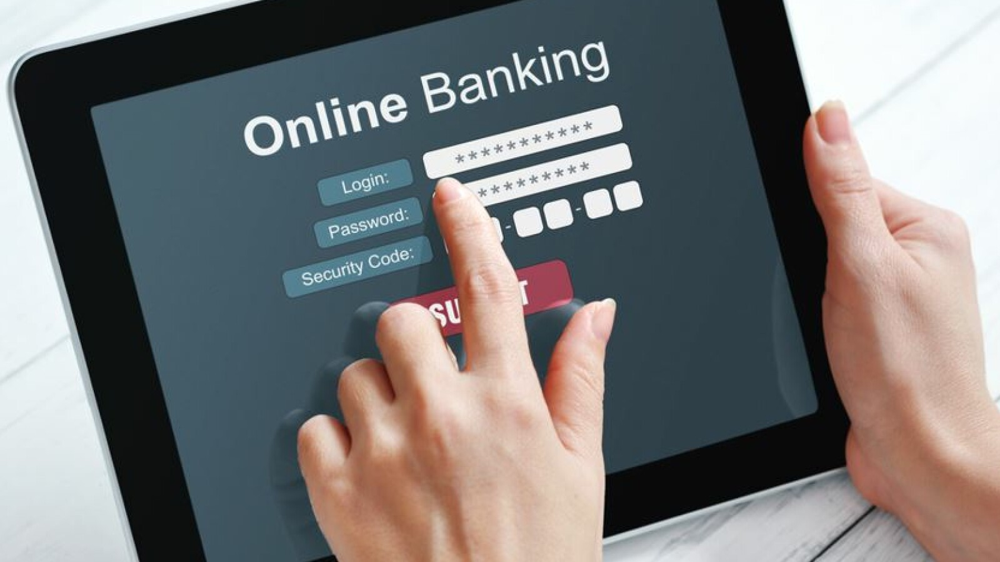

Onlinebanking wird ein immer wichtigerer Bestandteil des Alltags. Bei einigen Webseiten kann man mittlerweile ausschließlich mit Onlinebanking bezahlen,
und da es mittlerweile einige Produkte nur noch in Onlineshops erhältlich sind,
und auch durch die pandemische Lage durch das Coronavirus der Onlinemarkt massive Anstiege zu verzeichnen hat,
steigt auch die Nachfrage für neue Onlinebanking-Konten. Auch unerfahrene Personen denken immer mehr darüber nach,
sich ein Onlinebanking-Konto anzulegen. Auch unabhängig von Corona ist Onlinebanking bequemer für den Kunden.
Man muss beispielsweise nicht immer eine Bankfiliale für die Überweisungen aufsuchen.
Die Frage, die dabei häufig entsteht, ist die Frage der Sicherheit,
und ob es doch nicht völlig leicht für Hacker wäre, das Geld auf dem Konto zu stehlen.
An sich betrachtet ist Onlinebanking nicht gefährlicher als analoges Banking.
Hierbei kommt es jedoch auf die Bank und vor allem den Kunden an.
Als erstes muss man betrachten, dass es sich um sensible Daten handelt und man so schon im Vorhinein
zu äußerster Vorsicht geraten wird. Da es hier um das gesamte Geld des Kunden handelt,
sollten die Daten wie Passwörter etc. sicher verwahrt und nicht unüberlegt verbreitet werden,
und auf keinen Fall via E-Mail oder Nachricht. Vom Verbreiten der privaten Daten ist allgemein abzuraten.
Zudem sollte man bei suspekten E-Mails aufpassen, und auch nur bei seriösen Internetseiten seine Daten angeben,
und man sollte sich überlegen, auf welchen Internetseiten man Gegenstände einkauft oder Abonnements abschließt.
Durch sogenannte Phishing-Mails oder manipulierte Webseiten bestehen Gefahren, die es beim analogen Banking nicht gibt.
Beim Erstellen des Onlinebanking-Kontos ist es auch ratsam, ein Gerät zu wählen, welches über ein Antivirenprogramm verfügt,
und man sollte natürlich auch ein starkes und sicheres Passwort wählen, am besten mit Groß- und Kleinschreibung,
Zahlen und Sonderzeichen für maximale Sicherheit. Eine sichere Internetverbindung ist auch sehr wichtig, weswegen man,
falls man nicht ohnehin schon ein LAN-Kabel verwendet, welches weniger Angriffsfläche für Außenstehende bietet,
sein WLAN im Optimalfall verschlüsseln sollte, und keineswegs wollte man sein Onlinebanking in öffentlichen
WLAN-Netzen verrichten. Falls es doch einmal zu einem Problem kommen sollte, ist es ratsam, ein Tageslimit für
Transaktionen im Vorhinein festzulegen. Im Allgemeinen sollte man die Kontobewegungen regelmäßig im Auge
behalten. Während man gerade Onlinebanking verwendet, ist es sehr wichtig, immer die Adresszeile zu überprüfen.
Als letzten Schritt sollte man noch ein sicheres TAN-Verfahren zu den Überweisungen nutzen,
und auf jeden Fall die Zwei-Faktor-Authentifizierung aktivieren. Wenn man alle diese Schritte befolgt,
und an das gesamte Thema mit Vorsicht herangeht, ist Onlinebanking mindestens genauso sicher wie analoges
Banking, kann unter Umständen sogar sicherer als analoges Banking sein. Hackern wird es nahezu nicht möglich
sein, an das Geld heranzukommen.
